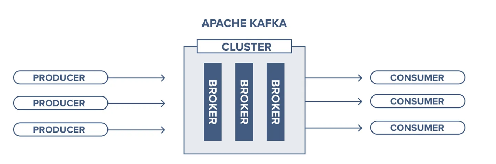
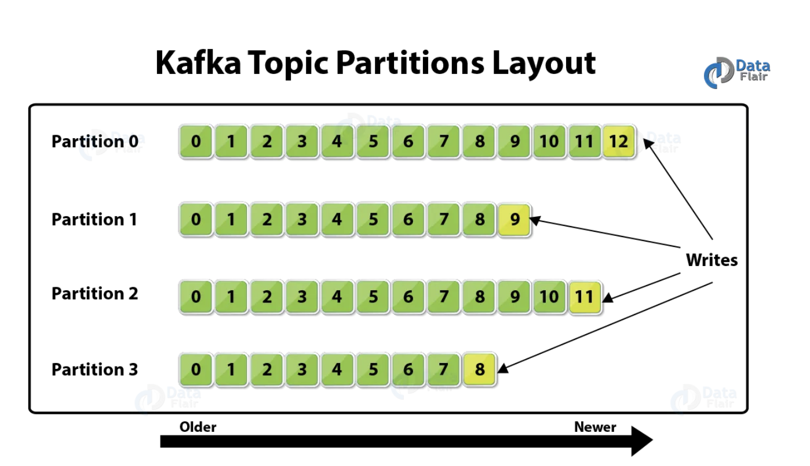
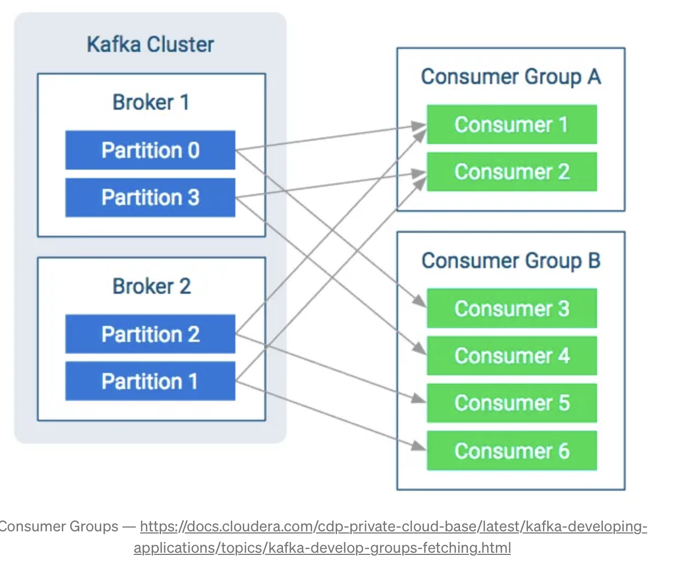

Wykład 4
Historia podejścia do architektury
Rozwój technologii, szczególnie przejście od monolitów do mikroserwisów, miał ogromny wpływ na współczesne systemy informatyczne. Monolityczne aplikacje, które były dominującym podejściem w przeszłości, stanowiły jedną, dużą jednostkę kodu. Takie podejście miało swoje zalety, takie jak prostota na początkowych etapach rozwoju systemu, ale także istotne wady, w tym trudności w skalowaniu, ograniczoną elastyczność i skomplikowaną konserwację.
W miarę jak technologia ewoluowała, pojawiły się mikroserwisy – podejście, które polega na dzieleniu aplikacji na mniejsze, niezależne usługi, z których każda odpowiada za określoną funkcjonalność. Przejście na mikroserwisy umożliwiło większą elastyczność, łatwiejsze skalowanie systemów oraz szybkie wdrażanie nowych funkcji. Ponadto każda usługa może być rozwijana, testowana i wdrażana niezależnie, co upraszcza zarządzanie kodem i zmniejsza ryzyko błędów.
Dzięki mikroserwisom organizacje mogą lepiej dostosować się do zmieniających się potrzeb biznesowych, poprawić dostępność systemów (poprzez izolowanie awarii do pojedynczych usług) oraz szybciej wprowadzać innowacje. Dodatkowo, mikroserwisy sprzyjają stosowaniu nowoczesnych metod takich jak konteneryzacja i chmurowe rozwiązania, co dodatkowo ułatwia zarządzanie infrastrukturą i pozwala na lepsze wykorzystanie zasobów.
Jednakże, mimo wielu korzyści, przejście do mikroserwisów wiąże się również z wyzwaniami, takimi jak:
- złożoność zarządzania komunikacją między usługami,
- konieczność monitorowania i utrzymania większej liczby komponentów
- zarządzanie transakcjami rozproszonymi.
Wymaga to nowych narzędzi i podejść do zarządzania oraz wdrożenia kultury DevOps.
Wraz z rozwojem mikroserwisów, pojawiły się także nowe technologie, takie jak serverless i konteneryzacja, które stanowią naturalne rozszerzenie elastyczności systemów. Te technologie jeszcze bardziej zwiększają efektywność zarządzania i skalowania nowoczesnych aplikacji, stając się kluczowymi elementami w ekosystemie chmurowym.
Serverless
Serverless to model, w którym deweloperzy nie muszą zarządzać serwerami ani infrastrukturą. Zamiast tego, dostawcy chmurowi zajmują się całą infrastrukturą, a programiści koncentrują się jedynie na kodzie aplikacji. Kluczowym atutem tego podejścia jest jego skalowalność – aplikacje automatycznie skalują się w zależności od zapotrzebowania na zasoby. Systemy serverless pozwalają na dynamiczne uruchamianie i zatrzymywanie funkcji w odpowiedzi na konkretne zdarzenia, co prowadzi do optymalizacji kosztów (płacisz tylko za faktyczne wykorzystanie zasobów). To podejście ułatwia zarządzanie aplikacjami o zmiennym lub trudnym do przewidzenia ruchu.
Serverless jest także doskonałym uzupełnieniem dla mikroserwisów, pozwalając na uruchamianie niezależnych funkcji w odpowiedzi na różne zdarzenia, co daje jeszcze większą elastyczność. Może być wykorzystywane w takich zastosowaniach jak przetwarzanie danych w czasie rzeczywistym, obsługa API czy automatyzacja zadań.
Konteneryzacja
Konteneryzacja (np. przy użyciu Docker) to kolejny krok w kierunku zwiększenia elastyczności. Dzięki kontenerom, aplikacje oraz ich zależności są zapakowane w izolowane jednostki, które można uruchamiać w różnych środowiskach w sposób spójny i przewidywalny. Kontenery są lekkie, szybkie do uruchomienia i oferują łatwość w przenoszeniu aplikacji między różnymi platformami, co jest kluczowe w architekturach mikroserwisowych.
Konteneryzacja zyskuje na znaczeniu, szczególnie w połączeniu z narzędziami do zarządzania kontenerami, takimi jak Kubernetes, które automatycznie skalują aplikacje, monitorują ich stan, zapewniają wysoką dostępność oraz zarządzają ich cyklem życia. To podejście idealnie wspiera zarówno mikroserwisy, jak i serverless, umożliwiając łatwe wdrażanie, skalowanie i monitorowanie aplikacji.
Wspólny Cel – Elastyczność
Zarówno serverless, jak i konteneryzacja, stanowią dalszy krok w kierunku elastyczności, oferując możliwość szybkiej reakcji na zmieniające się warunki i zapotrzebowanie. Wspólnie z mikroserwisami tworzą nowoczesne podejście do architektury aplikacji, które pozwala na rozdzielenie odpowiedzialności, łatwiejsze skalowanie, dynamiczne dostosowywanie zasobów i lepsze wykorzystanie infrastruktury chmurowej.
Kombinacja tych technologii umożliwia firmom szybkie wdrażanie nowych funkcji, reagowanie na zmieniające się potrzeby użytkowników oraz minimalizowanie kosztów poprzez optymalne wykorzystanie zasobów, co jest szczególnie istotne w dzisiejszym, dynamicznie zmieniającym się środowisku technologicznym.
Wpływ technologii na systemy informatyczne
Komunikacja sieciowa, relacyjne bazy danych, rozwiązania chmurowe oraz Big Data znacząco zmieniły sposób budowania systemów informatycznych i wykonywania w nich pracy.
Podobnie, narzędzia do przekazu informacji – takie jak gazeta, radio, telewizja, internet, komunikatory i media społecznościowe – wpłynęły na interakcje międzyludzkie oraz struktury społeczne.
Każde nowe medium technologiczne kształtuje sposób, w jaki ludzie korzystają z informatyki i postrzegają jej rolę w codziennym życiu.
Mikrousługi (Mikroserwisy) w nowoczesnej architekturze IT
Jednym z najpopularniejszych podejść do budowy systemów informatycznych jest koncepcja mikrousług (microservices).
Jest ona szeroko stosowana zarówno w tworzeniu oprogramowania, jak i w prowadzeniu firm opartych na analizie danych (Data-Driven).
Główne zalety mikroserwisów:
- Wydajność – każda usługa realizuje jedno, dobrze określone zadanie (“rób jedną rzecz, ale dobrze”).
- Elastyczność – umożliwiają łatwe modyfikacje i skalowanie systemu.
- Przejrzystość architektury – system składa się z niewielkich, niezależnych modułów.
Mikroserwisy można porównać do czystych funkcji w programowaniu funkcyjnym – każda usługa działa niezależnie i posiada jasno określone wejścia oraz wyjścia.
Aby umożliwić komunikację między mikroserwisami, często wykorzystuje się Application Programming Interfaces (API), które pozwalają na wymianę danych i integrację różnych usług.
Przykład API w mikroserwisach – Python & FastAPI
Poniżej znajduje się przykładowy mikroserwis REST API w Pythonie z użyciem FastAPI, który zwraca informacje o użytkownikach:
from fastapi import FastAPI
app = FastAPI()
# Przykładowe dane użytkowników
users = {
1: {"name": "Anna", "age": 28},
2: {"name": "Piotr", "age": 35},
3: {"name": "Kasia", "age": 22},
}
@app.get("/users/{user_id}")
def get_user(user_id: int):
"""Zwraca dane użytkownika na podstawie ID."""
return users.get(user_id, {"error": "User not found"})
if __name__ == "__main__":
import uvicorn
uvicorn.run(app, host="127.0.0.1", port=8000)Jak to działa?
- Uruchamiamy serwer FastAPI.
- Możemy uzyskać dane użytkownika, wysyłając żądanie GET do
http://127.0.0.1:8000/users/1. - API zwróci dane w formacie JSON, np.:
{
"name": "Anna",
"age": 28
}Komunikacja przez API
Centralnym elementem architektury mikrousług jest wykorzystanie interfejsów API (Application Programming Interface).
API umożliwia komunikację i integrację między różnymi mikroserwisami, podobnie jak strona internetowa komunikuje się z przeglądarką.
Gdy odwiedzasz stronę internetową, serwer wysyła kod, który Twoja przeglądarka interpretuje i wyświetla jako stronę internetową.
Podobnie działa API – wysyła odpowiedzi na zapytania klienta.
Przypadek biznesowy: Model ML jako usługa
Załóżmy, że pracujesz w firmie zajmującej się sprzedażą nieruchomości w Bostonie.
Chcesz zwiększyć sprzedaż i poprawić jakość obsługi klientów poprzez nową aplikację mobilną, z której może korzystać nawet 1 000 000 użytkowników jednocześnie.
Jednym z rozwiązań jest udostępnienie prognozy wartości domu w czasie rzeczywistym.
Gdy użytkownik prosi o wycenę nieruchomości, aplikacja wysyła zapytanie do serwera, który przetwarza je za pomocą modelu Machine Learning (ML) i zwraca oszacowaną wartość.
Czym jest serwowanie modelu ML?
Trening dobrego modelu ML to dopiero pierwszy krok całego procesu.
Aby model był użyteczny, musisz go udostępnić użytkownikom końcowym, np. w formie API.
Jak to zrobić?
- Potrzebujesz:
- wytrenowanego modelu ML,
- interpreter modelu (np. TensorFlow, Scikit-Learn, PyTorch),
- danych wejściowych dla modelu.
Kluczowe metryki jakości serwowania modelu:
Czas odpowiedzi (latency),
Koszt uruchomienia modelu (infrastruktura serwerowa),
Liczba zapytań na sekundę (QPS – Queries Per Second).
Udostępnianie danych między systemami zawsze było kluczowym wyzwaniem w tworzeniu oprogramowania.
W obszarze tradycyjnego DevOps koncentrujemy się na infrastrukturze, a w MLOps – na wdrażaniu i utrzymaniu modeli uczenia maszynowego.
Zbudowanie systemu przygotowanego do środowiska produkcyjnego jest bardziej skomplikowane niż wytrenowanie samego modelu:
- czyszczenie i załadowanie odpowiednich i zwalidowanych danych
- Obliczenie zmiennych i ich serwowanie na właściwym środowisku
- Serwowanie modelu w sposób najbardziej efektywny ze względu na koszty
- Wersjonowanie, śledzenie i udostępnianie danych i modeli oraz innych artefaktów
- Monitorowanie infrastruktury i modelu
- Wdrożenie modelu na skalowalnej infrastrukturze
- Automatyzacja procesu wdrażania i treningu
Jak działa API?
Kiedy wywołasz interfejs API, serwer otrzymuje Twoje żądanie, przetwarza je i generuje odpowiedź.
Jeśli wszystko działa poprawnie, otrzymasz wynik w formacie JSON lub XML.
Jeśli wystąpi błąd, API zwróci kod błędu HTTP (np. 400 – nieprawidłowe żądanie, 500 – błąd serwera).
Kluczowe zasady REST API:
Klient-Serwer → Klient (np. aplikacja mobilna) wysyła żądanie HTTP do API hostowanego na serwerze, który zwraca odpowiedź.
Działa to identycznie jak przeglądarka internetowa, która wysyła żądanie do serwera WWW i otrzymuje stronę HTML.Bezstanowość → Każde żądanie klienta musi zawierać wszystkie niezbędne informacje do przetworzenia odpowiedzi,
API nie powinno przechowywać informacji o wcześniejszych żądaniach użytkownika.
Przykład: API serwujące model ML
Poniżej znajduje się przykładowy serwis API, który udostępnia model ML do prognozowania ceny nieruchomości,
z wykorzystaniem FastAPI oraz Scikit-Learn:
from fastapi import FastAPI
import pickle
import numpy as np
# Tworzymy API
app = FastAPI()
# Wczytujemy wcześniej wytrenowany model ML (np. regresję liniową)
with open("model.pkl", "rb") as f:
model = pickle.load(f)
@app.get("/predict/")
def predict_price(area: float, bedrooms: int, age: int):
"""
Prognoza ceny nieruchomości na podstawie cech:
- area (powierzchnia w m²),
- bedrooms (liczba sypialni),
- age (wiek budynku w latach).
"""
features = np.array([[area, bedrooms, age]])
price = model.predict(features)[0]
return {"estimated_price": round(price, 2)}
if __name__ == "__main__":
import uvicorn
uvicorn.run(app, host="127.0.0.1", port=8000)Zapytanie - Request
- Adres URL (np. http://mydomain:8000/getapi?&val1=43&val2=3) zawiera:
- domenę,
- port,
- dodatkowe ścieżki,
- zapytanie
- Metody HTTP:
- GET,
- POST
- Nagłówki HTTP zawierają:
- informacje o autoryzacji,
- cookies metadata
Cała informacja zawarta jest w Content-Type: application/json, text … Accept: application/json, Authorization: Basic abase64string, Tokens 4. Ciało zapytania
Najczęściej wybieranym formatem dla wymiany informacji między serwisami jest format JavaScript Object Notation (JSON). Przypomina on pythonowy obiekt słownika - “klucz”: “wartość”.
{
"RAD": 1,
"PTRATIO": 15.3, "INDUS": 2.31, "B": 396.9,
"ZN": 18,
"DIS": 4.09, "CRIM": 0.00632, "RM": 6.575,
"AGE": 65.2, "CHAS": 0, "NOX": 0.538,
"TAX": 296, "LSTAT": 4.98
}Odpowiedź - Response
- Treść odpowiedzi przekazywana jest razem z nagłówkiem oraz statusem:
200 OK
Content-Encoding: gzip
Content-Type: text/html; charset=utf-8
Date: Mon, 18 Jul 2016 16:06:00 GMT Server: Apache
Path=/;np.: “Content-Type” => ”application/json; charset=utf-8”, ”Server” => ”Genie/Julia/1.8.5”
Treść (ciało) odpowiedzi:
{":input":{"RAD":1,"PTRATIO":15.3,"INDUS":2.31,.....}}, {":prediction":[29.919737211857683]}- HTTP status code:
- 200 OK - prawidłowe wykonanie zapytania,
- 40X Access Denied
- 50X Internal server error
Wyszukaj informacje czym jest
REST API.
Publikuj/Subskrybuj
System przesyłania wiadomości „Publikuj/Subskrybuj” ma kluczowe znaczenie dla aplikacji opartych na danych. Komunikaty Pub/Sub to wzorzec charakteryzujący się tym, że nadawca (publikujący) fragmentu danych (wiadomości) nie kieruje go wprost do odbiorcy. pub/sub to systemy, które często posiadają brokera czyli centralny punkt, w którym znajdują się wiadomości.
Apache Kafka
Na witrynie Kafki znajdziesz definicję:
Rozproszona platforma streamingowa
Co to jest „platforma rozproszonego przesyłania strumieniowego”?
Najpierw chcę przypomnieć, czym jest „strumień”. Strumienie to po prostu nieograniczone dane, dane, które nigdy się nie kończą. Ciągle ich przybywa i możesz przetwarzać je w czasie rzeczywistym.
A „rozproszone”? Rozproszony oznacza, że Kafka działa w klastrze, a każdy węzeł w grupie nazywa się Brokerem. Ci brokerzy to po prostu serwery wykonujące kopię Apache Kafka.
Tak więc Kafka to zestaw współpracujących ze sobą maszyn, aby móc obsługiwać i przetwarzać nieograniczone dane w czasie rzeczywistym.
Brokerzy sprawiają, że jest niezawodny, skalowalny i odporny na błędy. Ale dlaczego panuje błędne przekonanie, że Kafka to kolejny „kolejkowy system przesyłania wiadomości”?
Aby odpowiedzieć na tę odpowiedź, musimy najpierw wyjaśnić, jak działa kolejkowe przesyłanie wiadomości.
Kolejkowy system przesyłania wiadomości
Przesyłanie wiadomości, to po prostu czynność wysyłania wiadomości z jednego miejsca do drugiego. Ma trzech głównych “aktorów”:
- Producent: Który tworzy i wysyła komunikaty do jednej lub więcej kolejek;
- Kolejka: struktura danych bufora, która odbiera (od producentów) i dostarcza komunikaty (do konsumentów) w sposób FIFO (First-In-First-Out). Po otrzymaniu powiadomienia jest ono na zawsze usuwane z kolejki; nie ma szans na odzyskanie go;
- Konsument: subskrybuje jedną lub więcej kolejek i otrzymuje ich wiadomości po opublikowaniu.
I to jest to; tak działa przesyłanie wiadomości. Jak widać, nie ma tu nic o strumieniach, czasie rzeczywistym czy klastrach.
Architektura Apache Kafka
Więcej informacji na temat Kafki znajdziesz w tym linku.
Teraz, gdy rozumiemy podstawy przesyłania wiadomości, zagłębmy się w świat Apache Kafka.
W Kafce mamy dwa kluczowe pojęcia: Producentów (Producers) i Konsumentów (Consumers),
którzy działają w podobny sposób jak w klasycznych systemach kolejkowych, produkując i konsumując wiadomości.

Jak widać, Kafka przypomina klasyczny system przesyłania wiadomości, jednak w odróżnieniu od tradycyjnych kolejek,
zamiast pojęcia kolejki (queue) mamy Tematy (Topics).
Tematy (Topics) i Partycje (Partitions)
Temat (Topic) to podstawowy kanał przesyłania danych w Kafce.
Można go porównać do folderu, w którym przechowywane są wiadomości.
Każdy temat posiada jedną lub więcej partycji (Partitions) – podział ten wpływa na skalowalność i równoważenie obciążenia.
Podczas tworzenia tematu określamy liczbę partycji.
Kluczowe cechy tematów i partycji:
- Temat to logiczna jednostka, do której producenci wysyłają wiadomości, a konsumenci je odczytują.
- Partycja to fizyczny podział tematu. Można ją porównać do plików w folderze.
- Offset – każda wiadomość w partycji otrzymuje unikalny identyfikator (offset),
który pozwala konsumentom śledzić, które wiadomości zostały już przetworzone. - Kafka przechowuje wiadomości na dysku, dzięki czemu może je ponownie odczytać (w przeciwieństwie do klasycznych kolejek, gdzie wiadomość jest usuwana po przetworzeniu).
- Konsumenci odczytują wiadomości sekwencyjnie, od najstarszej do najnowszej.
- W przypadku awarii konsument może wznowić przetwarzanie od ostatniego zapisanego offsetu.

Brokerzy (Brokers) i Klaster Kafka
Kafka działa w sposób rozproszony – oznacza to, że może składać się z wielu brokerów (Brokers),
które współpracują jako jeden klaster.

Kluczowe informacje o brokerach
- Broker to pojedynczy serwer w klastrze Kafki, odpowiedzialny za przechowywanie partycji tematów.
- Każdy broker w klastrze ma unikalny identyfikator.
- Aby zwiększyć dostępność i niezawodność, Kafka wykorzystuje replikację danych.
- Współczynnik replikacji określa, ile kopii danej partycji ma być przechowywane na różnych brokerach.
- Jeśli temat ma trzy partycje i współczynnik replikacji równy trzy,
oznacza to, że każda partycja zostanie powielona na trzech różnych brokerach.
Liczba partycji powinna być dobrana w taki sposób, aby każdy broker miał co najmniej jedną partycję do obsługi.
Producenci (Producers)
W Kafka producenci to aplikacje lub usługi, które tworzą i wysyłają wiadomości do tematów.
Działa to podobnie do systemów kolejkowych, z tą różnicą, że Kafka zapisuje wiadomości w partycjach.
Jak Kafka przypisuje wiadomości do partycji?
- Wiadomości są rozsyłane okrężnie (round-robin) do dostępnych partycji.
- Możemy określić klucz wiadomości, a Kafka wyliczy jego hash,
aby określić, do której partycji trafi wiadomość. - Klucz wiadomości determinuje przypisanie do partycji – jeśli temat został już utworzony,
liczba partycji nie może być zmieniona bez zakłócenia tego mechanizmu.
Przykład przypisania wiadomości do partycji:
- Wiadomość 01 trafia do partycji 0 tematu Topic_1.
- Wiadomość 02 trafia do partycji 1 tego samego tematu.
- Kolejna wiadomość może ponownie trafić do partycji 0, jeśli stosujemy przypisanie round-robin.
from kafka import KafkaProducer
# Tworzymy producenta Kafka
producer = KafkaProducer(bootstrap_servers="localhost:9092")
# Wysyłamy wiadomość do tematu "real_estate"
topic = "real_estate"
message = b"Nowe mieszkanie na sprzedaż"
producer.send(topic, message)
producer.flush()
print(f"Wiadomość wysłana do tematu '{topic}'")Konsumenci (Consumers)
Konsumenci w Kafce odczytują i przetwarzają wiadomości z tematów. Każdy konsument może należeć do grupy konsumentów (Consumer Group), co pozwala na równoległe przetwarzanie wiadomości. - Jeśli wielu konsumentów należy do tej samej grupy, Kafka równoważy obciążenie między nimi. - Jeśli jeden konsument przestanie działać, Kafka automatycznie przypisze jego partycje do innego aktywnego konsumenta.
Przykład konsumenta w Pythonie:
from kafka import KafkaConsumer
# Tworzymy konsumenta, który nasłuchuje temat "real_estate"
consumer = KafkaConsumer("real_estate", bootstrap_servers="localhost:9092")
print("Oczekiwanie na wiadomości...")
for message in consumer:
print(f"Otrzymano wiadomość: {message.value.decode()}")Innym ważnym pojęciem Kafki są „Grupy konsumentów”. Jest to bardzo ważne, gdy musimy skalować odczytywanie wiadomości. Staje się to bardzo kosztowne, gdy pojedynczy konsument musi czytać z wielu partycji, więc musimy zrównoważyć obciążenie między naszymi konsumentami, wtedy wchodzą grupy konsumentów.
Dane z jednego tematu będą równoważone obciążeniem między konsumentami, dzięki czemu możemy zagwarantować, że nasi konsumenci będą w stanie obsługiwać i przetwarzać dane. Ideałem jest posiadanie takiej samej liczby konsumentów w grupie, jaką mamy jako partycje w temacie, w ten sposób każdy konsument czyta tylko z jednego. Podczas dodawania konsumentów do grupy należy uważać, jeśli liczba konsumentów jest większa niż liczba partycji, niektórzy konsumenci nie będą czytać z żadnego tematu i pozostaną bezczynni.
